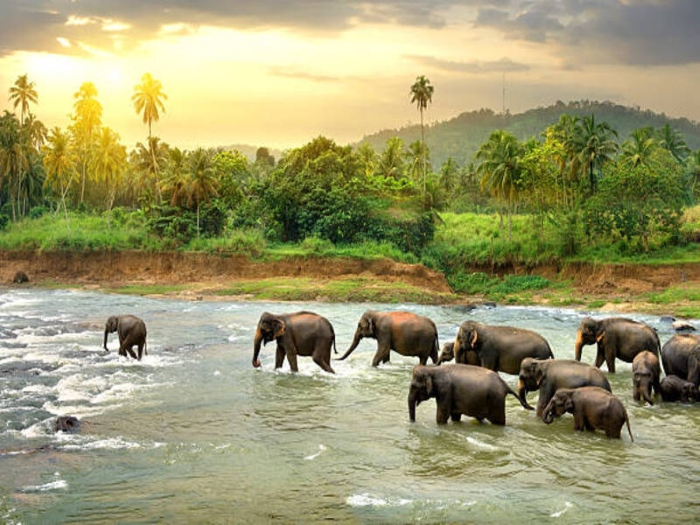

Singapore
Singapore is a modern and multicultural city known for its futuristic skyline, beautiful gardens, delicious food, and extremely clean and safe environment. It blends tradition and modern life, making it a fascinating place to explore.
It combines traditional heritage with modern innovations, making it a fascinating place to explore
References
Image source: here